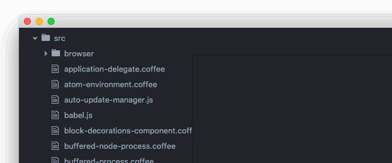
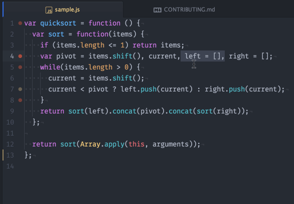

Atom 1.7 and 1.8 beta
April 12, 2016 BinaryMuse
Tweet
Atom 1.7 and 1.8-beta are out.
Major Changes in 1.7.0 Stable
Below is a summary of the noteworthy changes in Atom 1.7. If you want to see every PR that went into Atom 1.7, check out the Atom 1.7.0 release notes.
Most Recently Used Tab Switching
In Atom 1.7, ctrl-tab will switch between the most recently used (MRU) tabs in an Atom window instead of switching to the tab to the right of the current tab.

MRU tab switching was a heavily requested feature, but if you want the old behavior back, you can overwrite the associated keybinds (using the new keyup syntax) in your Keymap file:
'body':
'ctrl-tab ^ctrl': 'unset!'
'ctrl-tab': 'pane:show-next-item'
'ctrl-shift-tab ^ctrl': 'unset!'
'ctrl-shift-tab': 'pane:show-previous-item'
Opening and Managing Files from the Tree View
Atom 1.7 brings some changes to the way clicking on files in the tree view behaves, making it easier to select files for operations like renaming and deleting and more closely matching the behavior of other editors.
If you have pending pane items enabled, then single-clicking an item in the tree view will open the file in pending mode but leave the focus in the tree view; double-clicking the file will switch the file to permanent mode and focus the editor.

With pending pane items disabled, single-clicking a file in the tree view will only select it, and double-clicking it will open it for editing and focus the editor.
- atom/tree-view#749 - Clicking on file in tree view that isn’t open sets focus on editor
- atom/tree-view#801 - Keep focus on single click and update to use 1.6stable pending items api
- atom/tree-view#803 - Don’t open file on single-click unless core.allowPendingPaneItems=true
Adding Project Folders from the Command Line
Atom now supports the --add swich (aliased to -a) which will add the passed directory as a project folder to the most recently focused Atom window instead of opening that folder in its own window.

Keyup Keystroke Support in Keybinds
Atom’s Keymap file now supports a new syntax for dispatching events on keyup events. For example,
'atom-workspace':
'ctrl-y ^ctrl': 'core:do-stuff'
means that the core:do-stuff command will be dispatched when the user presses ctrl-y and then releases the ctrl key. If any other binding is used instead of or after the ctrl-y, the command will not be dispatched.
You can also specify multiple events in a sequence:
'atom-workspace':
'a b c ^c ^a ^b': 'core:secret-triple-command'
This command would be dispatched when the user presses a, b, c, then releases c, b, a; however, releasing a, b, then c would not dispatch the event.
Check out the relevant PR for all the details!
Crash Recovery
Crashes are nobody’s idea of fun, but in case Atom does crash on you, it periodically saves your editor state. After relaunching Atom after a crash, you should find all your work saved and ready to go.
To reset Atom’s serialized state, start Atom with --clear-window-state; the previous method of deleting ~/.atom/storage no longer works.
- atom/atom#10605 - Periodically save state and store in IndexedDB
- atom/atom#11060 - Serialize MarkerLayers only on quit
- atom/text-buffer#136 - Redesign History and Improve serialization performance
- atom/atom-patch#7 - Add FlatBuffers serialization
Environment Per Window
Each Atom window can now have its own environment; if you use packages that rely on certain environment variables being set for particular language or project workflows, you no longer have to relaunch Atom to get the right environment variables.
Packages Using Async Git
A whole slew of packages have been updated to use the new async Git module, resulting in performance improvements across the board when these packages access Git data.
Electron Update
Atom’s version of Electron has been bumped from 0.34 to 0.36, providing newer versions of Chrome and Node.js and a number of bug fixes. Chrome is now at version 47, and Node.js is at 5.1.1.
Windows Improvements
1.7 brings a number of improvements to the Atom experience on Windows.
- Build documentation clarifies how to build in VS 2015; the clean script handles NPM2 long paths and Appveyor CI builds support added
- Installation conditions where the PATH would not be correctly set have been addressed as well as ensuring pinned shortcuts are updated when Atom updates and other improvements from the latest Squirrel installer such as .msi packages and draggable splash panel.
- Command line –wait switch works from Command Prompt, PowerShell and Bash allowing you to specify Atom as your commit message editor with
git config --global core.editor "atom --wait" - Portable mode is now documented in the Flight Manual.
- Downloads from atom.io using Internet Explorer on Windows 7 now have .exe extension.
- Some Git issues have been resolved.
- File types can be easily associated with Atom. No more need to hunt for atom.exe or deal with broken associations after an update. Note: Installing Atom does not take over any file associations.

Major Changes in 1.8-beta
See the Atom 1.8.0-beta0 release notes for everything that is in 1.8 beta.
More Ways to Move Text
Atom 1.8-beta includes two new commands for moving text left and right by one column. They are bound to cmd-ctrl-left and cmd-ctrl-right on OS X and alt-shift-left and alt-shift-right on Windows and Linux.

More Enhancements to Environment Handling
Added the ability to update an Atom window’s environment from the terminal by executing the same command with an updated terminal environment.
Bug Fixes
Atom 1.8-beta includes a number of bug fixes, including emoji rendering on OS X and a number of Git related issues.